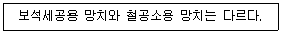
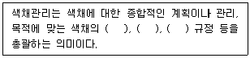

컬러리스트기사 (2020-06-06 기출문제)
1과목: 색채심리 마케팅
1. 색채의 지각과 감정 효과에 대한 설명 중 틀린 것은?
- 낮은 천장에 밝고 차가운 색을 칠하면 천장이 높아 보인다.
- 자동차의 겉 부분에 난색계통을 칠하면 눈에 잘 띈다.
- 좁은 방 벽에 난색계통을 칠하면 넓어 보이게 할 수 있다.
- 욕실과 화장실은 청결하고 편안한 느낌의 한색계통을 적용하는 것이 일반적이다.
(정답률: 73%)

2. 제품의 색채선호에 대한 설명 중 틀린 것은?
- 자동차는 지역환경, 빛의 강약, 자연환경, 생활패턴 등에 따라 선호 경향이 다르게 나타난다.
- 제품 고유의 특성 때문에 제품의 선호색은 유행을 따르지 않는다.
- 동일한 제품도 성별에 따라 선호색이 다르다.
- 선호 색채는 사용자의 라이프 스타일을 반영한다.
(정답률: 85%)
3. 소비자 구매심리 과정 중 신제품, 특정상품 등이 시장에 출현하게 되면 디자인과 색채에 시선이 끌리면서 관찰하게 되는 시기는?
- Attention
- Interest
- Desire
- Action
(정답률: 75%)
4. 시장세분화의 목적에 대한 설명으로 틀린 것은?
- 시장기회의 탐색을 위해
- 변화하는 시장수요에 수동적으로 대처하기 위해
- 소비자의 욕구를 정확하게 충족시키기 위해
- 자사와 경쟁사의 강점과 약점을 효과적으로 평가하기 위해
(정답률: 61%)
5. 마케팅 전략에 활용할 수 있는 소비자 행동요인과 가장 거리가 먼 것은?
- 준거집단
- 주거지역
- 수익성
- 소득수준
(정답률: 74%)
6. 포커에서 사용하는 '칩' 중에서 고득점의 것을 가르키며, 매우 뛰어나거나 매우 질이 좋다는 의미의 형용사로도 사용되는 컬러는?
- 골드
- 레드
- 블루
- 화이트
(정답률: 48%)
7. 최신 트렌드컬러의 반영이 가장 효과적인 상품군은?
- 개성을 표현하는 인테리어나 의복과 같은 상품군
- 많은 사람들의 공감이 필요한 공공 상품군
- 첨단의 기술이 필요한 정보통신 상품군
- 어린이들의 호기심을 유발할 필요가 있는 유아관련 상품군
(정답률: 78%)
8. 소비자의 의미에 대한 설명으로 옳지 않은 것은?
- 잠재적 소비자(Prospects) : 제품이나 서비스를 구매할 가능성이 있는 집단
- 소비자(Consumer) : 브랜드나 서비스를 구입한 경험이 없는 집단
- 고객(Customer) : 특정 브랜드를 반복적으로 구매하는 사람
- 충성도 있는 고객(Loyal Customer) : 특성 브랜드에 대해 신뢰를 가지고 구매의사 결정에 직접적인 영향을 주는 구매자
(정답률: 80%)
9. 색채 정보수집 방법의 설명으로 틀린 것은?
- 색채정보를 수집하기 위해 표본조사 방법이 가장 흔히 적용된다.
- 표본 추출은 편의(bias)가 없는 조사를 위해 무작위로 뽑아야 한다.
- 층화표본추출은 상위집단으로 분류한 뒤 상위집단별로 비레적으로 표본을 선정한다.
- 집락표본추출은 모집단을 모두 포괄하는 목록을 가지고 체계적으로 표본을 선정하는 방법이다.
(정답률: 45%)
10. 색채와 연관된 인간의 반응을 연구하는 한 분야로 생리학, 예술, 디자인, 건축 등과 관계된 항목은?
- 색채 과학
- 색채 심리학
- 색채 경제학
- 색채 지리학
(정답률: 82%)
11. 제품의 라이프 스타일과 색채계획을 고려한 성장기에 대한 설명으로 옳은 것은?
- 디자인보다는 기능과 편리성이 중시되므로 대부분 소재가 갖고 있는 색을 그대로 활용하여 무채색이 주로 활용된다.
- 경쟁제품과 차별화하고 소비자의 감성을 만족시켜주기 위하여 색채를 적극적으로 활용하여 제품의 존재를 강하게 드러내는 원색을 주로 사용하게 된다.
- 기능과 기본적인 품질이 거의 만족되고 기술개발이 포화되면 이미지 콘셉트에 따라 배색과 소재가 조정되어 고객의 자신이 원하는 이미지의 제품을 선택하게 된다.
- 색의 선택에 있어 사회성, 지역성, 풍토성과 같은 환경요소가 개입되니 시작하고 개개의 색보다 주위와의 조화가 중시된다.
(정답률: 54%)
12. 국제적 언어로 인지되는 색채와 기호의 사례가 틀린 것은?
- 빨간색 소방차
- 녹색 십자가의 구급약품 보관함
- 노랑 바탕에 검정색 추락위험 표시
- 마실 수 있는 물의 파란색 포장
(정답률: 68%)
13. 컬러 마케팅의 역할이 가장 돋보일 수 있는 마케팅 전략은?
- 제품 중심의 마케팅
- 제조자 중심의 마케팅
- 고객 지향적 마케팅
- 감성소비시대의 마케팅
(정답률: 62%)
14. 파버 비렌(Birren, Faber)이 연구한 색채와 형태의 연상이 바르게 연결된 것은?
- 파랑 – 원
- 초록 – 삼각형
- 주황 – 정사각형
- 노랑 – 육각형
(정답률: 72%)
15. 색의 심리적 효과에 대한 설명으로 옳은 것은?
- 고명도의 색은 가볍게 느껴진다.
- 빨간 조명 아래에서는 시간이 실제보다 짧게 느껴진다.
- 난색계의 밝고 선명한 색은 진정감을 준다.
- 한색계의 어둡고 탁한 색은 흥분감을 준다.
(정답률: 69%)
16. 브랜드의 기능에 대한 설명으로 옳지 않은 것은?
- 자기만족과 과시심리를 차단하는 기능
- 한 기업의 제품이나 서비스를 구별되게 하는 기능
- 속성, 편익, 가치, 문화 등을 통해 어떤 의미를 전달하는 기능
- 브랜드를 통해 용도나 사용 층의 범위를 나타내는 기능
(정답률: 77%)
17. 색채 시장조사 방법 중 설문지 작성에 관한 내용으로 잘못된 것은?
- 설문지 문항 중 개방형 문항은 응답자가 자신을 생각을 자유롭게 응답하는 것이다.
- 설문지 문항 중 폐쇄형은 두 개 이상의 응답 가운데 하나를 선택하도록 하는 것이다.
- 쉽게 응답할 수 있는 질문을 먼저 구성한다.
- 각 질문에 여려 개의 내용을 복합적으로 구성한다.
(정답률: 80%)
18. 마케팅의 기본 요소인 4P가 아닌 것은?
- 소비자 행동
- 가격
- 판매촉진
- 제품
(정답률: 77%)
19. 색채가 가지고 있는 이미지의 질적인 면을 수량적, 정량적으로 수치화하여 감성을 구분하는 기준으로 활용하기에 적합한 색채조사기법은?
- SD법
- KJ법
- TRIZ법
- ASIT법
(정답률: 86%)
20. 색채치료에 대한 설명으로 틀린 것은?
- 인간의 신진대사 작용에 영향을 주거나 그것을 평가하는데 색을 이용하는 의료 방법이다.
- 색채치료에서 색채는 고유한 파장과 진동수를 갖는 에너지의 한 형태로 인식한다.
- 현대 의학에서의 색채치료 사례로 적외선 치료법이 있다.
- 일반적으로 파랑은 혈압을 높이고 근육긴장을 증대하는 색채치료 효과가 있다.
(정답률: 77%)
2과목: 색채디자인
21. 디자인의 개발에서 산업 생산과 기업의 정책에 영향을 끼치지 않는 시장상황은?
- 포화되지 않은 시장
- 포화된 시장
- 완료된 시장
- 지리적 시장
(정답률: 33%)
22. 색채계획에 관한 설명 중 틀린 것은?
- 국제 유행색위원회에서는 매년 색채 팔레트의 50% 정도만을 새롭게 제시하고 있다.
- 공공성, 경관의 특징 등을 고려한 계획이 요구되는 것은 도시 공간 색채이다.
- 일시적이며 유행에 민감하며 수명이 짧은 것은 개인색채이다.
- 색채계획이란 색채디자인의 목표를 달성하기 위해 시장과 고객 분석을 통해 색채를 적용하는 과정이다.
(정답률: 59%)
23. 기업의 이미지 통합계획으로 기업의 이미지를 시각적으로 인지하고 기억하도록 하는 시각디자인의 분야는?
- 일러스트레이션(Illustration)
- C.I.P(Corporation Identity Program)
- 슈퍼 그래픽 디자인(Super Graphic Design)
- BI(Brand Identity)
(정답률: 56%)
24. 실내 색채계획으로 거리가 가장 먼 것은?
- 작은 규모의 현관은 진한 색을 사용하는 것이 바람직하다.
- 천장은 아주 연한색이나 흰색이 좋다.
- 거실은 밝고 안정감 있는 고명도, 저채도의 중성색을 사용한다.
- 벽은 온화하고 밝은 한색계가 눈을 편하게 한다.
(정답률: 65%)
25. 2차원에서 모든 방향으로 펼쳐진 무한히 넓은 영역을 의미하며 형태를 생성하는 요소로서의 기능을 가진 것은?
- 점
- 선
- 면
- 공간
(정답률: 68%)
26. 오스트리아에서 전개된 아르누부의 명칭은?
- 유겐트 스틸(Jugend Stil)
- 스틸 리버티(Stile Liberty)
- 아르테 호벤(Arte Joven)
- 빈 분리파(Wien Secession)
(정답률: 50%)
27. 다음 설명은 형태와 기능에 대한 포괄적 개념으로서의 복합기능(function complex) 중 어디에 해당되는가?

- 방법
- 필요
- 용도
- 연상
(정답률: 75%)
28. 디자인(design)의 목적과 관련이 적은 것은?
- 인위적이고 합목적성을 지닌 창작행위이다.
- 디자인과 심미성을 1차 목적으로 한다.
- 기본목표는 미와 기능의 합일이다.
- 형태는 기능에 따른다.
(정답률: 60%)
29. 색채디자인의 목적과 거리가 가장 먼 것은?
- 최대한 다양한 색상 조합을 연출하여 시선을 자극한다.
- 색채의 체계적 계획을 통한 색채 상품으로서의 고부가가치를 창출한다.
- 기업의 상품 가능성을 높여 전략적 마케팅을 성공적으로 이끈다.
- 원초적인 심리와 감성적 소구를 끌어내어 소비자의 구매욕구를 자극한다.
(정답률: 70%)
30. 바우하우스의 기별 교장과 특징이 옳게 나열된 것은?
- 1기 : 그로피우스 – 근대 디자인 경향
- 2기 : 그로피우스 – 사회주의적 경향
- 3기 : 한네스 마이어 – 표현주의적 경향
- 4기 : 미스 반 데 로에 – 나치의 탄압
(정답률: 51%)
31. 근대디자인의 역사에 지대한 영향을 끼친 바우하우스 디자인학교의 설립연도와 설립자는?
- 1909년 윌터 그로피우스
- 1919년 윌터 그로피우스
- 1925년 하네스 마이어
- 1937년 하네스 마이어
(정답률: 70%)
32. 제품 색채 기획 단계에 해당 되지 않은 것은?
- 시장 조사
- 색채 분석
- 소재 및 재질 결정
- 색채 계획서 작성
(정답률: 64%)
33. 디자인 원리 중 비례의 개념과 거리가 먼 것은?
- 객관적 질서와 과학적 근거를 명확하게 드러내는 구성형식이다.
- 기능과는 무관하나 미와 관련이 있어, 자연에서 훌륭한 미를 가지는 형태는 좋은 비례 양식을 가지고 있다.
- 회화, 조각, 공예, 디자인, 건축 등에서 구성한느 모든 단위의 크기와 각 단위의 상호관계를 결정한다.
- 구체적인 구성형식이며, 보는 사람의 감정에 직접적으로 호소하는 힘을 가지고 있다.
(정답률: 50%)
34. 상업용 공간의 피사드(facade) 디자인은 어떤 분야에 속하는가?
- exterior design
- multiful design
- illustration design
- industrial design
(정답률: 65%)
35. 디자인의 조건에 해당되지 않는 것은?
- 합목적성
- 심미성
- 통일성
- 경제성
(정답률: 68%)
36. 색채디자인 평가에서 검토대상과 내용이 잘못 연결된 것은?
- 면적효과 – 대상이 차지하는 면적
- 거리감 – 대상과 보는 사람과의 심리적 거리
- 선호색 – 공공성의 정도
- 조명 – 조명의 구분 및 종류와 조도
(정답률: 54%)
37. 멀티미디어 디자인의 특징과 거리가 가장 먼 것은?
- One-way communication
- Usability
- Information architecture
- Interactivity
(정답률: 64%)
38. 디자인의 요소가 아닌 것은?
- 구성
- 색
- 재질감
- 형태
(정답률: 46%)
39. 패션디자인의 색채계획에서 세련되고 도시적인 느낌의 포멀(formal) 웨어 디자인에 주로 이용되는 색조는?
- pale 톤
- vivid 톤
- dark 톤
- dull 톤
(정답률: 44%)
40. 디자인에 있어 미적 유용성 효과(Aesthetic Usability Effect)의 설명 중 틀린 것은?
- 디자인이 아름다운 것은 사용하기 좋다고 인지된다.
- 디자인이 아름다운 것은 창조적 사고와 문제해결을 촉구한다.
- 디자인이 아름다운 것은 비교적 오랫동안 사용된다.
- 디자인이 아름다운 것은 지각반응을 감퇴시킨다.
(정답률: 70%)
3과목: 색채관리
41. 어떤 색채가 매체, 주변 색, 광원, 조도 등이 다른 환경에서 관찰될 때 다르게 보여 지는 현상은?
- 컬러 어피어런스(color appearance)
- 컬러 맵핑(color mapping)
- 컬러 변환(color transformation)
- 컬러 특성화(color characterization)
(정답률: 70%)
42. 다음 중 안료를 사용하지 않는 것은?
- 플라스틱 염색
- 인쇄잉크
- 회화용 크레용
- 옷감
(정답률: 59%)
43. 맥아담의 편차 타원을 정량화하기 위해서 프릴레, 맥아담, 칙커링에 의해 만들어진 색차는?
- CMC(2:1)
- FMC-2
- BFD(1:c)
- CIE94
(정답률: 44%)
44. 저드(D. B. Judd)의 UCS 색도그림에서 완전 방사체 궤적에 직교하는 직선 또는 이것을 다른 적당한 색도도상에 변환시킨 것은?
- 방사 휘도율
- 입체각 방사율
- 등색온도선
- V(λ) 곡선
(정답률: 39%)
45. 다음 중 담황색을 내기 위한 색소는?
- 안토시안
- 루틴
- 플라보노이드
- 루테올린
(정답률: 45%)
46. 컬러시스템(color system)에 대한 설명 중 틀린 것은?
- RGB 형식은 컴퓨터 모니터와 스크린 같이 빛의 원리로 색채를 구현하는 장치에서 사용된다.
- 컴퓨터 그래픽스 작업이 프린트로 출력되는 방식은 CMYK 색조합에 의한 결과물이다.
- HSB 시스템에서의 색상은 일반적 색 체계에서 360° 단계로 표현된다.
- Lab 시스템은 물감의 여러 색을 혼합하고 다시 여기에 흰색이나 검정을 섞어 색을 만드는 전통적 혼합방식과 유사하다.
(정답률: 54%)
47. 광원에 따라 색채의 느낌을 다르게 보이는 현상 이외에 광원에 따라 색차가 변화는 현상은?
- 맥콜로 효과
- 메타메리즘
- 하만 그리드
- 폰-베졸트
(정답률: 55%)
48. 디지털 영상출력장치의 성능을 표시하는 600dpi란?
- 1 inch 당 600개의 화점이 표시되는 인쇄영상의 분해능을 나타내는 수치
- 1시간 당 최대 인쇄 매수로 나타낸 프린터의 출력 속도를 표시한 수치
- 1cm 당 600개의 화소가 표시되는 모니터 영상의 분해능을 나타낸 수치
- 1분 당 표시되는 화면수를 나타낸 모니터의 응답 속도를 표시한 수치
(정답률: 61%)
49. 모니터의 색 온도에 대한 내용으로 틀린 것은?
- 6500K와 9300K의 두 종류 중에서 사용자가 임의로 색온도를 설정할 수 있다.
- 색 온도의 단위는 K(Kelvin)를 사용한다.
- 자연에 가까운 색을 구현하기 위해서는 색 온도를 6500K로 설정하는 것이 바람직하다.
- 색 온도가 9300K로 설정된 모니터의 화면에서는 적색조를 띠게 된다.
(정답률: 60%)
50. '트롤란드(troland, 단위 기호 Td)'sms 다음의 보기 중 어느 것의 단위인가?
- 역치
- 광택
- 망막조도
- 휘도
(정답률: 33%)
51. 한국산업표준(KS) 인용규격에서 표준번호와 표준명의 표기가 틀린 것은?
- KS A 0011 물체색의 색 이름
- KS B 0062 색의 3속성에 의한 표시 방법
- KS C 0075 광원의 연색성 평가
- KS C 0074 측색용 표준광 및 표준광원
(정답률: 35%)
52. CCM 소프트웨어에 대한 설명 중 옳은 것은?
- 배합 비율은 도료와 염료에 기본적으로 똑같이 적용된다.
- 빛의 흡수계수와 산란계수를 이용하여 배합비를 계산한다.
- formulation 부분에서 측색과 오차 판정을 한다.
- quality control 부분에서 정확한 컬러런트 양을 배분한다.
(정답률: 41%)
53. 색채 측정기 중 정확도 급수가 가장 높은 기기는?
- 스펙트로포토미터
- 크로마미터
- 덴시토미터
- 컬러리미터
(정답률: 48%)
54. 일정한 두께를 가진 발색층에서 감법혼색을 하는 경우에 성립하는 색료의 흡수, 산란을 설명하는 원리는?
- 데이비스-깁슨 이론(Davis-Gibson theory)
- 헌터 이론(Hunter theory)
- 쿠벨카 문크 이론(Kubelka Munk theory)
- 오스트발트 이론(Ostwald theory)
(정답률: 44%)
55. 다음 중 육안 검색 시 사용하는 주광원이나 보조 광원이 아닌 것은?
- 광원C
- 광원 D50
- 광원A
- 광원 F8
(정답률: 22%)
56. 백화점에서 산 흰색 도자기가 집에서 보면 청색 기운을 띤 것처럼 달라 보이는 이유는?
- 조건등색
- 광원의 연색성
- 명순응
- 잔상현상
(정답률: 47%)
57. 인쇄에 관한 설명 중 틀린 것은?
- 인쇄잉크의 기본 4원색은 C(Cyan), M(Magenta), Y(Yellow), K(Black)이다.
- 인쇄용지에 따라 망점 선수를 달리하며 선수가 많을수록 인쇄의 품질이 높아진다.
- 오프셋(offset)인쇄는 직접 종이에 인쇄하지 않고 중간 고무판을 거쳐 잉크가 묻도록 되어있다.
- 볼록판 인쇄는 농담 조절이 가능하여 풍분한 색을 낼 수 있고 에칭 그라비어 인쇄가 여기에 속한다.
(정답률: 50%)
58. 회화나무의 꽃봉오리로 황색염료가 되며 매염제에 따라서 황색, 회녹색 등으로 다양하게 염색되는 것은?
- 황벽(黃蘗)
- 소방목(蘇方木)
- 괴화(槐花)
- 울금(鬱金)
(정답률: 41%)
59. 다음의 ( )에 적합한 용어는?

- 기능, 조명, 개발
- 개발, 측색, 조색
- 조색, 안료, 염료
- 측색, 착색, 검사
(정답률: 59%)
60. 색채를 16진수로 표기할 때 바르게 연결된 것은?
- 녹색 – FF0000
- 마젠타 – FF00FF
- 빨강 – 00FF00
- 노랑 - 0000FF
(정답률: 56%)
4과목: 색채지각론
61. 환경색채를 계획하면서 좀 더 부드러운 분위기가 연출되도록 색을 조정하려고 할 때 가장 적합한 방법은?
- 한색계열의 색을 사용한다.
- 채도를 낮춘다.
- 주목성이 높은 색을 사용한다.
- 명도를 낮춘다.
(정답률: 66%)
62. 동일한 크기의 두 색이 보색대비 되었을 때 강한 대비효과를 줄이는 방법이 아닌 것은?
- 두 색 사이를 벌린다.
- 두 색의 경계를 애매하게 만든다.
- 두 색 사이에 무채색의 테두리를 넣는다.
- 두 색 중 한 색의 크기를 줄인다.
(정답률: 40%)
63. 간상체와 추상체의 시각은 각각 어떤 파장에 가장 민감한가?
- 약 300nm, 약 460nm
- 약 400nm, 약 460nm
- 약 500nm, 약 560nm
- 약 600nm, 약 560nm
(정답률: 60%)
64. 2가지 이상의 색을 시간적인 차이를 두고서 차례로 볼 때 주로 일어나는 색채대비는?
- 동시대비
- 계시대비
- 병치대비
- 동화대비
(정답률: 71%)
65. 색을 혼합할수록 명도가 높아지는 3원색은?
- Red, Yellow, Blue
- Cyan, Magenta, Yellow
- Red, Blue, Green
- Red, Blue, Magenta
(정답률: 70%)
66. 색상, 명도, 채도 모두에서 나타나는 것으로 특히 프린트 디자인이나 벽지와 같은 평면 디자인 시 배경과 그림의 관계를 고려해야 하는 현상은?
- 동화 현상
- 대비 현상
- 색의 순응
- 면적 효과
(정답률: 21%)
67. 복도를 길어 보이게 할 때, 사용할 적합한 색은?
- 따듯한 색
- 차가운 색
- 명도가 높은 색
- 채도가 높은 색
(정답률: 59%)
68. 색채 지각 중 눈의 망막에서 일어나는 착시적 혼합이 아닌 것은?
- 감법혼색
- 병치혼색
- 회전혼색
- 계시혼색
(정답률: 65%)
69. 잔상(after image)에 대한 설명으로 틀린 것은?
- 잔상의 출현은 원래 자극의 세기, 관찰시간, 크기에 의존한다.
- 원래의 자극과 색이나 밝기가 반대로 나타나는 것은 음성잔상이다.
- 보색잔상은 색이 선명하지 않고 질감도 달라 면색(面色)처럼 지각된다.
- 잔상현상 중 보색잔상에 의해 보게 되는 보색을 물리보색이라고 한다.
(정답률: 40%)
70. 진출하는 느낌을 가장 적게 주는 색의 경우는?
- 따듯한 색보다 차가운 색
- 어두운 색보다 밝은 색
- 채도가 낮은 색보다 채도가 높은 색
- 저명도 무채색 보다 고명도 유채색
(정답률: 71%)
71. 색의 혼합에 대한 설명 중 틀린 것은?
- 2장 이상의 색 필터를 겹친 후 뒤에서 빛을 비추었을 때 혼색을 감법혼색이라 한다.
- 여러 종류의 색자극이 눈의 망막에서 겹쳐져 혼색되는 것을 가법혼색이라 한다.
- 색자극의 단계에서 여러 종류의 색자극을 혼색하여 그 합성된 색자극을 하나의 색으로 지각하는 것을 생리적 혼색이라 한다.
- 가법혼색은 컬러인쇄의 색분해에 의한 네거티브필름의 제조와 무대조명 등에 활용된다.
(정답률: 32%)
72. 빛의 특성과 작용에 대한 설명 중 간섭에 대한 예시로 옳은 것은?
- 아지랑이
- 비눗방울
- 저녁노을
- 파란하늘
(정답률: 60%)
73. 다음 중 공간색이란?
- 맑고 푸른 하늘과 같이 끝없이 들어갈 수 있게 보이는 색
- 유리나 물의 색 등 일정한 부피가 쌓였을 때 보이는 색
- 전구나 불꽃처럼 발광을 통해 보이는 색
- 반사물체의 표면에 보이는 색
(정답률: 57%)
74. 색의 속성 중 우리 눈에 가장 민감한 속성은?
- 색상
- 명도
- 채도
- 색조
(정답률: 44%)
75. 회전원판을 2등분하여 S1070-R10B와 S1070-Y50R의 색을 칠한 다음 빠르게 돌렸을 때 지각되는 색에 가장 가까운 색은?
- S1070-Y30R
- S1070-Y80R
- S1070-R30B
- S1070-R80B
(정답률: 39%)
76. 눈의 구조에서 빛이 망막에 상이 맺힐 때 가장 많이 굴절되는 부분은?
- 망막
- 각막
- 공막
- 동공
(정답률: 46%)
77. 다음 중 가장 부드럽게 보이는 색은?
- 5R 3/10
- 5YR 8/2
- 5B 3/6
- N4
(정답률: 59%)
78. 색료의 3원색 중 Yellow와 Magenta를 혼합했을 때의 색은?
- Green
- Orange
- Red
- Brown
(정답률: 53%)
79. 최소한의 색으로 더 이상 쪼갤 수 없거나 다른 색을 섞어서 나올 수 없는 색은?
- 광원색
- 원색
- 순색
- 유채색
(정답률: 41%)
80. 명소시와 암소시의 중간 정도의 밝기에서 추상체와 간상체 모두 활동하고 있는 시각상태는?
- 잔상시
- 유도시
- 중간시
- 박명시
(정답률: 71%)
5과목: 색채체계론
81. 5YR 4/8에 가장 가까운 ISCC-NIST 색기호는?
- s-BR
- v-OY
- v-Y
- v-rO
(정답률: 21%)
82. 오스트발트의 색체계에서 등색상 삼각형의 수직축과 평행 선상의 색의 조화는?
- 등백색 계열
- 등순색 계열
- 등가색환 계열
- 등흑색 계열
(정답률: 55%)
83. magenta, lemon, ultramarine blue, emerald green 등은 어떤 색명인가?
- ISCC-NBS 일반색명
- 관용색명
- 표준색명
- 계통색명
(정답률: 66%)
84. L*c*h* 체계에 대한 설명이 틀린 것은?
- L*a*b*와 똑같은 L*은 명도를 나타낸다.
- c*값은 중앙에서 멀어질수록 작아진다.
- h는 +a*축에서 출발하는 것으로 정의하여 그곳을 0°로 한다.
- 0°는 빨강, 90°는 노랑, 180°는 초록, 270°는 파랑이다.
(정답률: 46%)
85. 한국전통색에 대한 설명으로 틀린 것은?
- 음양오행사상을 표현하는 상징적 의미의 표현수단이다.
- 오정색은 음에 해당하며 오간색은 양에 해당된다.
- 오정색은 각각 방향을 의미하고 있어 오방색이라고도 한다.
- 오간색은 오방색을 합쳐 생겨난 중간색이다.
(정답률: 58%)
86. 한국전통색명 중 소색(素色)에 대한 설명이 옳은 것은?
- 눈이나 우유의 빛깔과 같이 밝고 선명한 색
- 거친 삼베색
- 무색의 상징색으로 전혀 가공하지 않은 소재의 색
- 전통한지의 색으로 누렇게 바랜 책에서 느낄 수 있는 색
(정답률: 46%)
87. 오스트발트 색입체의 설명으로 틀린 것은?
- 일그러진 비대칭 형태이다.
- 정삼각 구도의 사선배치로 이루어진다.
- 쌍원추체 혹은 복원추체이다.
- 보색을 중심으로 배치하였기 때문에 색상이 등간격으로 분호하지는 않는다.
(정답률: 42%)
88. 오스트발트 색채조화원리 중 ec - ic – nc는 어떤 조화인가?
- 등순색 계열
- 등백색 계열
- 등흑색 계열
- 무채색의 조화
(정답률: 50%)
89. 색체계의 설명으로 옳은 것은?
- 현색계는 1931년에 국제조명위원회에서 정한 X, Y, Z계의 3자극 값을 기본으로 한다.
- 현색계는 물리적 측정 방법에 기초하여 표시하는 방법으로 X, Y, Z 표색계라고도 한다.
- 혼색계는 color order system이라고도 하는데, 인간의 색지각에 기초하여 물체색을 순차적으로 보기 좋게 배열하고 색입체 공간을 체계화한 것이다.
- 혼색계는 변색, 탈색 등의 물리적 영향이 없다.
(정답률: 40%)
90. NCS 색체계에서 S6030-Y40R이 의미하는 것이 옳은 것은?
- 검정색도(blackness)가 30%의 비율
- 하양색도(whiteness)가 10%의 비율
- 빨강(Red)이 60%의 비율
- 순색도(chromaticness)가 60%의 비율
(정답률: 37%)
91. 다음 중 시감 반사율 Y값 20과 가장 유사한 먼셀 기호는?
- N1
- N3
- N5
- N7
(정답률: 29%)
92. 먼셀 색체계에서 P의 보색은?
- Y
- GY
- BG
- G
(정답률: 51%)
93. 일반적으로 색을 표시하거나 전달하는 방법에 관한 설명 중 틀린 것은?
- 개나리색, 베이지, 쑥색 등과 같은 계통색 이름으로 표시할 수 있다.
- 기본색이름이나 조합색이름 앞에 수식형용사를 붙여서 아주 밝은 노란 주황, 어두운 초록 등으로 표시한다.
- NCS 색체계는 S5020-B40G로 색을 표기한다.
- 색채표준이란 색을 일정하고 정확하게 측정, 기록, 전달, 관리하기 위한 수단이다.
(정답률: 52%)
94. 다음의 명도 표기 중 가장 밝은 색채는?
- 먼셀 N = 7
- CIE L* = 65
- CIE Y = 9.5
- DIN D = 2
(정답률: 30%)
95. 먼셀 색체계에 관한 설명으로 틀린 것은?
- 현재 우리나라 산업표준으로 제정되어 사용하고 있다.
- 5R 4/10의 표기에는 명도가 4, 채도가 10이다.
- 기본색상은 Red, Yellow, Green, Blue, Purple 이다.
- 색입체를 수평으로 절단한 면은 등색상면의 배열이다.
(정답률: 48%)
96. KS 기본색이름과 조합색이름을 수식하는 방법에 대한 설명이 틀린 것은?
- 조합색이름은 기준색이름 앞에 색이름 수식형을 붙여 만든다.
- 색이름 수식형 중 '자줏빛'은 기준색 이름인 분홍에만 사용할 수 있다.
- '밝고 연한'의 예와 같이 2개의 수식형용사를 결합하여 사용할 수 있다.
- 부사 '매우'를 무채색의 수식형용사 앞에 붙여 사용할 수 있다.
(정답률: 32%)
97. 파버 비렌(Birren, Faber)의 색채조화원리 중 색채의 깊이와 풍부함이 있어 렘브란트가 작품에 시도한 조화는?
- WHITE – GRAY - BLACK
- COLOR – SHADE - BLACK
- TINT – TONE - SHADE
- COLOR – WHITE – BLACK
(정답률: 35%)
98. 문·스펜서의 조화론에 대한 설명으로 틀린 것은?
- 배색의 아름다움을 계산으로 구하고 그 수치에 의하여 조화의 정도를 비교하는 방법이다.
- M은 미도, O는 질서성의 요소, C는 복잡성의 요소를 의미한다.
- 조화이론을 정량적으로 다룸에 있어 색채연상, 색채기호, 색채의 적합성은 고려하지 않았다.
- 제2부조화와 같이 아주 유사한 색의 배색은 배색의 의도가 좋지 못한 결과로 판단되기 쉽다.
(정답률: 35%)
99. NCS 체계를 구성하고 있는 기초적인 6가지 색은?
- 흰색(W), 검정(S), 노랑(Y), 주황(O), 빨강(R), 파랑(B)
- 노랑(Y), 빨강(R), 녹색(G), 파랑(B), 보라(P), 흰색(W)
- 시안(C), 마젠타(M), 노랑(Y), 검정(K), 흰색(W), 녹색(G)
- 빨강(R), 파랑(B), 녹색(G), 노랑(Y), 흰색(W), 검정(S)
(정답률: 61%)
100. 여러 가지 색체계의 표기 중 밑줄의 성격이 다른 것은?
- S2030-Y10R
- L*=20.5, a*=15.3, b*=-12
- Yxy
- T : S : D
(정답률: 46%)
좁은 방 벽에 난색계통을 칠하면 오히려 더 혼잡해 보일 수 있습니다. 이는 색채의 대비와 밝기가 강조되어 더욱 좁아 보이기 때문입니다. 따라서 좁은 공간에는 어두운 색을 사용하거나, 중간 색조의 색상을 선택하는 것이 좋습니다.
그리고 "낮은 천장에 밝고 차가운 색을 칠하면 천장이 높아 보인다."는 맞는 설명입니다. 밝고 차가운 색은 시야를 높여주는 효과가 있기 때문에 천장이 높아 보이게 만들어 줍니다.
"자동차의 겉 부분에 난색계통을 칠하면 눈에 잘 띈다."는 일반적으로 맞는 설명입니다. 난색계통은 눈에 띄는 효과가 있기 때문에 자동차와 같은 대형 물체에 사용되는 경우가 많습니다.
마지막으로 "욕실과 화장실은 청결하고 편안한 느낌의 한색계통을 적용하는 것이 일반적이다."는 맞는 설명입니다. 청결하고 편안한 느낌을 주는 색상은 일반적으로 밝은 색이며, 화이트, 베이지, 연한 파스텔톤 등이 많이 사용됩니다.